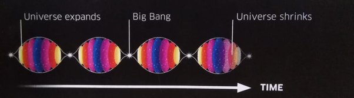
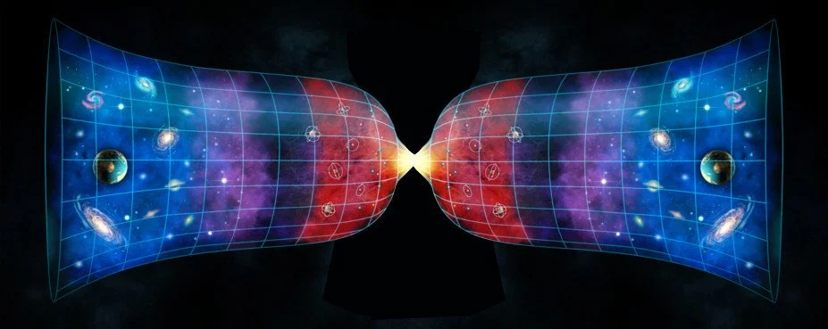

Ever wondered how the universe came into existence? It is one of the greatest mysteries known to man. Why exactly are we here and how? What is our purpose? It's not easy answering these questions, scientists are still exploring and discovering the begining of time.
| |
How did the universe begin? Scientists say that our universe began with a bang. This theory is called the "Big Bang". The big bang is estimated to have begin 13.8 billion years ago, when a small dense singularity suddenly started expanding, containing all of the matter in today's universe.
The idea of the big bang sounds a little off, a singularity containing everything suddenly expanding out of no where? Well, there's actually a reasoning behind this. Quantum Fluctuations. In the world of quantum physics, the universe isn't empty, even before the big bang. Quantum fields are the building blocks of the universe, they interact with matter and particles and make things the way there are. These fields are energy, and they give off jitters since they don't remain a constant value, these jitters are "quantum fluctuations", waves in space time. It is believed that they interacted with this singularity and set it off, creating everything we know.
More recently, scientists are saying that the universe may have had multiple "Big Bangs". Perhaps this isn't the first universe in existence. The universe migh recycle itself in a constant "Big Crunch" death and a "Big Bang" beginning. This is called he "Big Bounce" and was discovered by Abhay Ashtekar , Tomasz Pawlowski and Parampreet Singh.
  Home